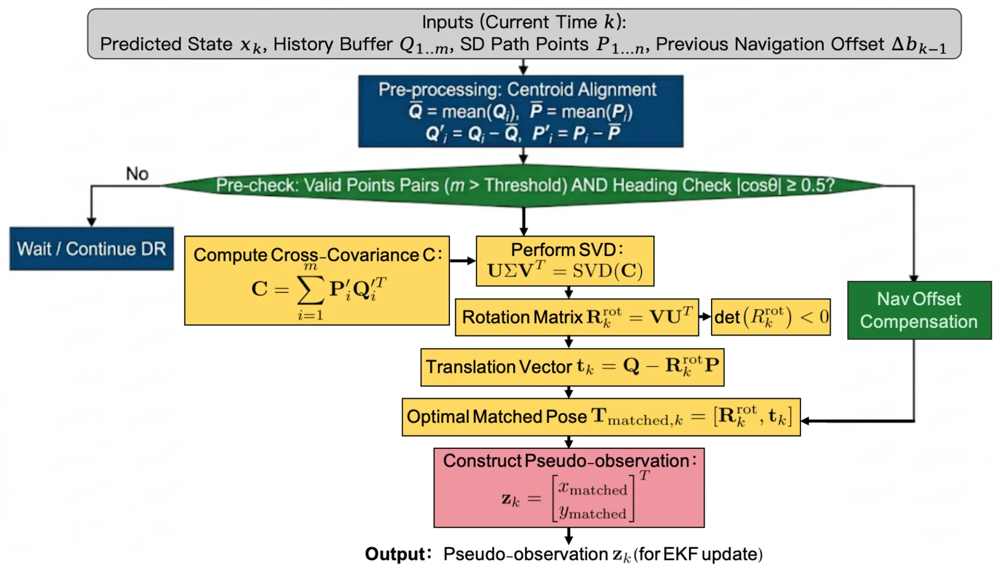
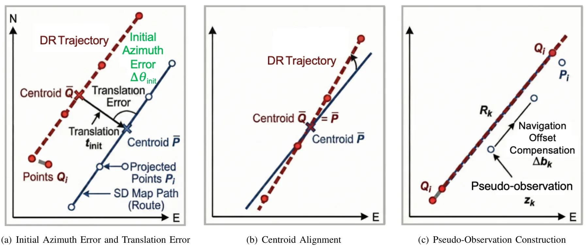
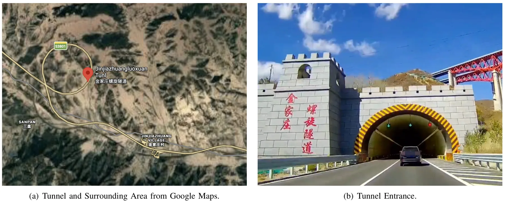
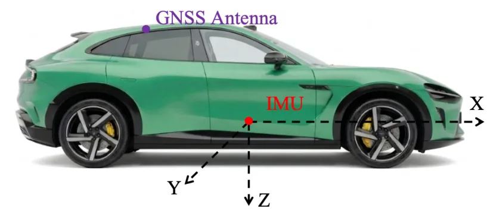
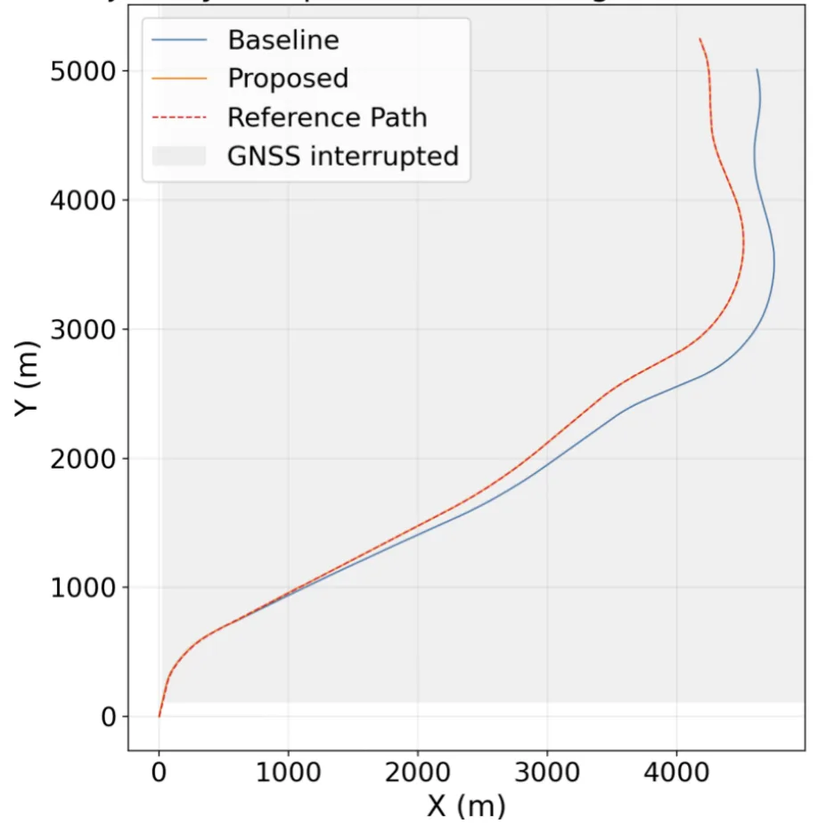
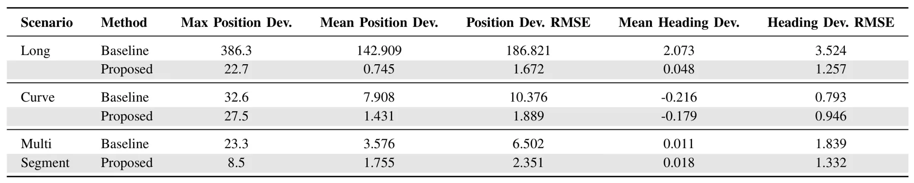

GNSS 退化环境下无人地面车 MEMS/GNSS 组合导航的路线约束鲁棒融合估计Route-Constrained Robust Fusion Estimation for MEMS/GNSS Integrated Navigation of Unmanned Ground Vehicles in GNSS Degraded Environments
今天最直接的 GNSS/INS 融合论文；路线约束、伪观测 EKF 和工程 fail-safe 对城市峡谷/隧道鲁棒导航有实际参考价值。
一句话工作总结
该方法把 HD map 任务路线与 dead-reckoning 轨迹匹配，生成伪位置观测注入 EKF，以抑制隧道等 GNSS outage 下 UGV 的 MEMS/GNSS 漂移。
摘要
为解决结构化道路环境中无人地面车在严重 GNSS 信号遮挡下的累积定位漂移，本文提出鲁棒路线约束状态估计方法。在无卫星信号期间，方法建立历史 dead reckoning 轨迹与高清地图中 mission route 局部线段的对应关系，并通过二维刚体变换估计 route-referenced position。该估计位置随后作为伪位置观测注入 Extended Kalman Filter update。这样，道路级路线约束可连续注入统一状态估计框架，抑制相对任务路线的位置偏差，并间接改善方位估计。为增强实用性，作者还引入 trigger control、matching quality validation、route offset compensation、single update correction limiting 等工程策略。长隧道、多段隧道和弯曲隧道实验显示，该方法能抑制卫星中断期间的误差累积，降低大最大偏差风险，提升定位连续性和道路级可用性。
To address cumulative localization drift of unmanned ground vehicles in structured road environments under severe Global Navigation Satellite System signal occlusion, this paper proposes a robust route-constrained state estimation method. During periods without satellite signals, the proposed method establishes the correspondence between the historical dead reckoning trajectory and local segments of the mission route extracted from a high-definition map, and estimates a route-referenced position via a two-dimensional rigid transformation. The estimated position is then formulated as a pseudo-position observation and incorporated into an Extended Kalman Filter update. In this way, route constraints at the road level can be continuously injected into a unified state estimation framework, thereby suppressing position deviation relative to the mission route while indirectly improving azimuth estimation. To enhance practical applicability, engineering strategies, such as trigger control, matching quality validation, route offset compensation, and single update correction limiting, are further introduced. Experiments in three representative scenarios, including a long tunnel, a multi-segment tunnel, and a curved tunnel, show that the proposed method effectively suppresses error accumulation during satellite outages, reduces the risk of large maximum deviation, and improves localization continuity and road-level usability.
中文解读摘录
- 链接：abs / PDF；作者：Jingzhi Cui, Chao Zhang, Yuliang Mao, Shaolin Lü, Dongmei Li, Huan Che, Rong Zhang；类别：cs.RO；备注：ICRA 2026 Robot Meets GNSS and Ranging workshop；采集 score=7。
- 核心思路：面向 UGV 在隧道等 GNSS 严重遮挡环境下的 MEMS/GNSS integrated navigation，利用 HD map 中 mission route 的局部线段与历史 dead reckoning 轨迹匹配，通过二维刚体变换估计 route-referenced position。
- 方法要点：把估计位置作为 pseudo-position observation 注入 EKF；同时加入 trigger control、matching quality validation、route offset compensation、single update correction limiting 等工程策略，减少卫星中断期间的路径偏离和方位漂移。
- 关注点：这是今天 GNSS/INS 专项最直接条目。建议重点看路线约束是否只提供 road-level correction、伪观测协方差如何设定、隧道曲率/多段隧道中匹配质量如何判别，以及是否可扩展为因子图 map constraint。
图表/页面预览

{kind=link}

{kind=link}

{kind=link}

{kind=link}

{kind=link}

{kind=link}
